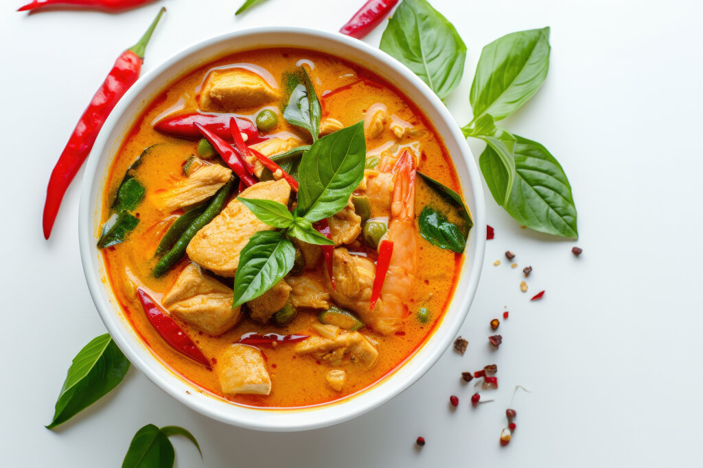

Home
Thai Pineapple Chicken Curry

Ingredients
- 1 quart water
- 2 cups uncooked jasmine rice
- ¼ cup red curry paste
- 2 (13.5 ounce) cans coconut milk, divided
- 2 skinless, boneless chicken breast halves - cut into thin strips
- 1 ½ cups sliced bamboo shoots, drained
- ¼ cup white sugar
- 3 tablespoons fish sauce
- ½ red bell pepper, julienned
- ½ green bell pepper, julienned
- ½ small onion, chopped
- 1 cup pineapple chunks, drained
Steps
- Bring water and rice to a boil in a pot. Reduce heat to low, cover, and simmer for 25 minutes.
- Whisk together curry paste and 1 can coconut milk in a bowl. Transfer to a wok and mix in remaining coconut milk, chicken, bamboo shoots, sugar, and fish sauce. Bring to a boil and cook until chicken juices run clear, 15 minutes.
- Mix bell peppers and onion into the wok. Continue cooking until peppers are tender, about 10 minutes.
- Remove from heat and stir in pineapple. Serve over cooked rice.